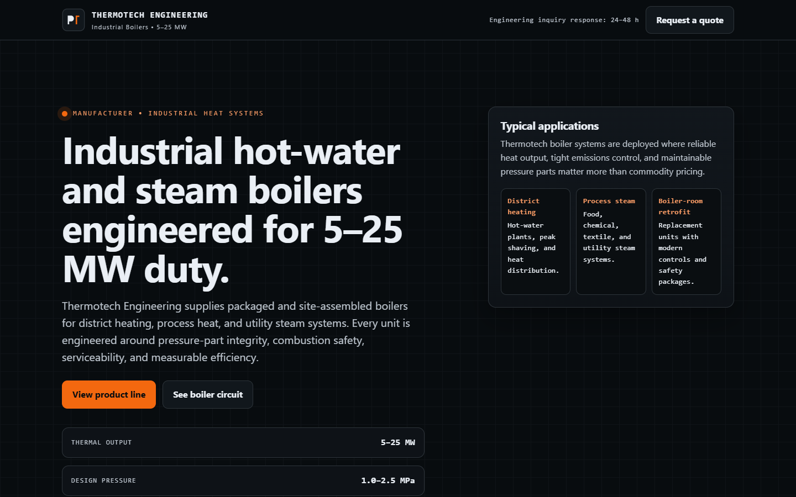
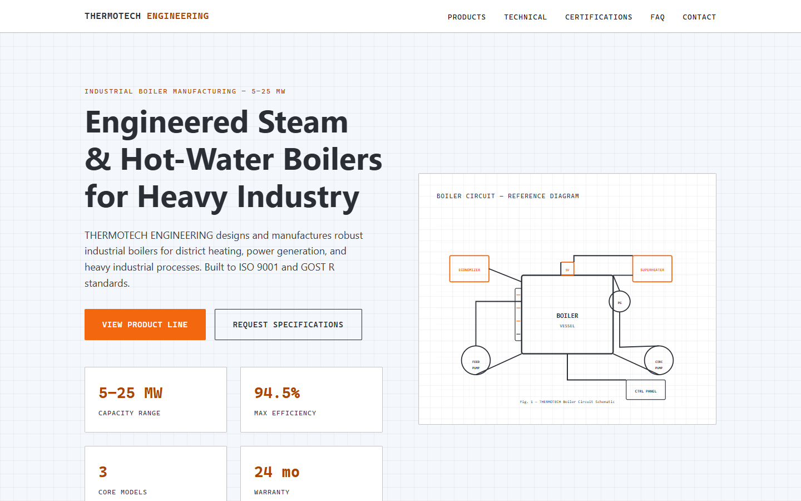
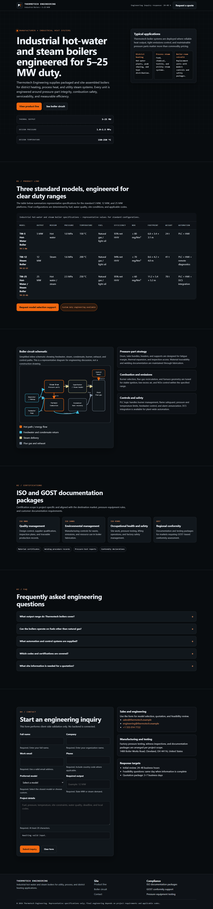
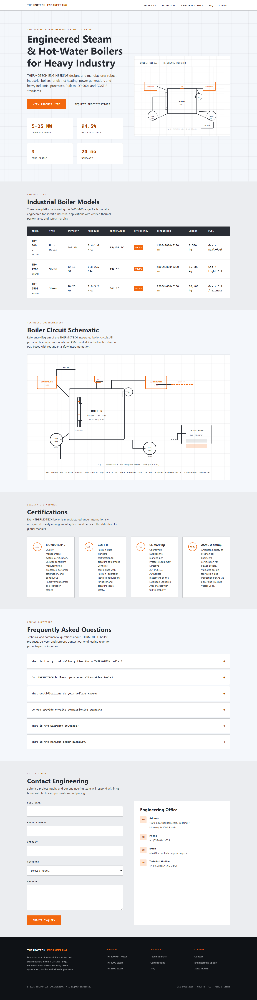
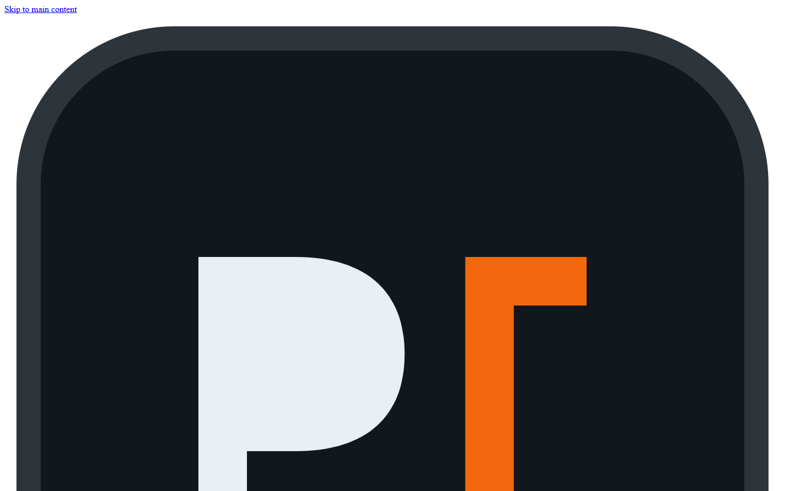
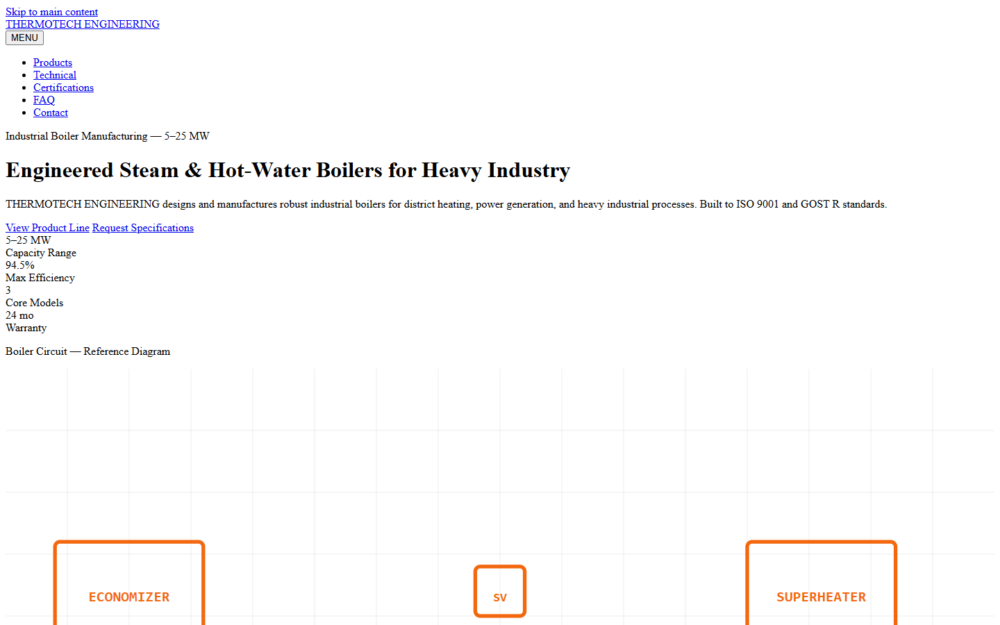
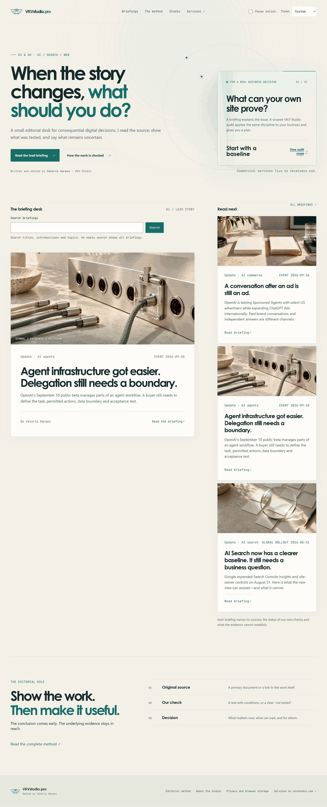
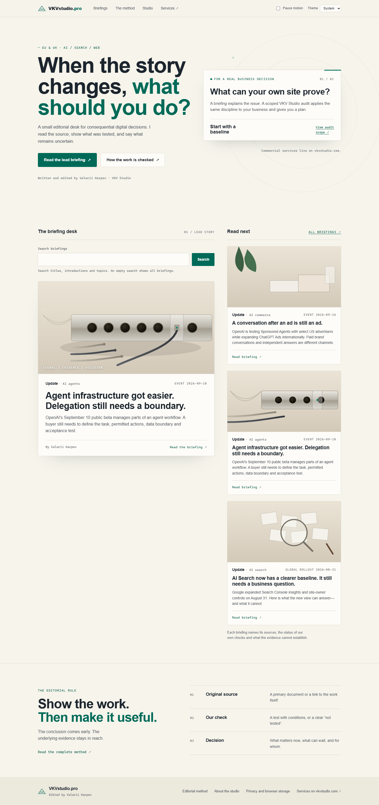
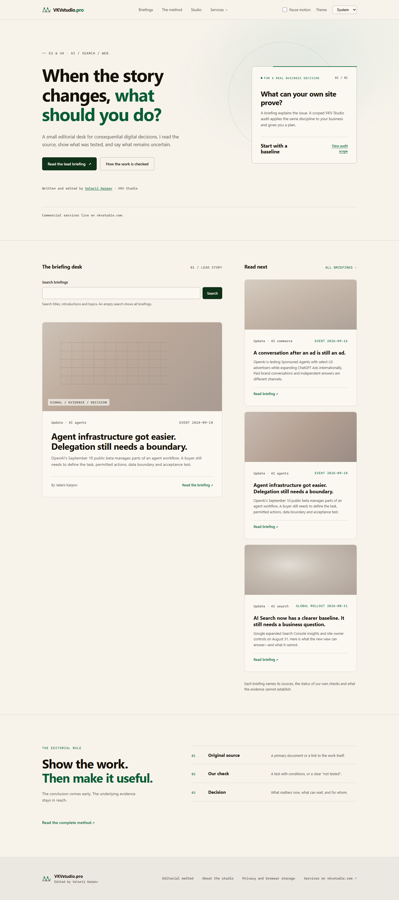

SmartLLM — Сравнение рендеров Qwen3.8-Flash vs Ling-3.0-Flash-VL
1. Задача T1 (THERMOTECH ENGINEERING) — Реальная вёрстка моделей (первый экран 1440×900)
qwen/qwen3.8-flash — T1 (тёмный канон Industrial B2B Engineering)

inclusionai/ling-3.0-flash-vl — T1 (светлый фон)

2. Задача T1 — Полные страницы (fullPage)
qwen/qwen3.8-flash — T1 Full Page

inclusionai/ling-3.0-flash-vl — T1 Full Page

3. Задача T1 — Как открываются «из коробки» (браузер заблокировал CSS из-за ошибки в CSP)
qwen/qwen3.8-flash — T1 Raw CSP ('data:' в кавычках)

inclusionai/ling-3.0-flash-vl — T1 Raw CSP (заглушка sha256-COMPUTE_...)

4. Задача T2 (VKVstudio.pro по скриншоту) — Референс vs Qwen (SVG-формы) vs Ling (градиенты)
Оригинал (ref/t2.png)

qwen/qwen3.8-flash — T2 (SVG-иллюстрации)

inclusionai/ling-3.0-flash-vl — T2 (CSS-градиенты)
